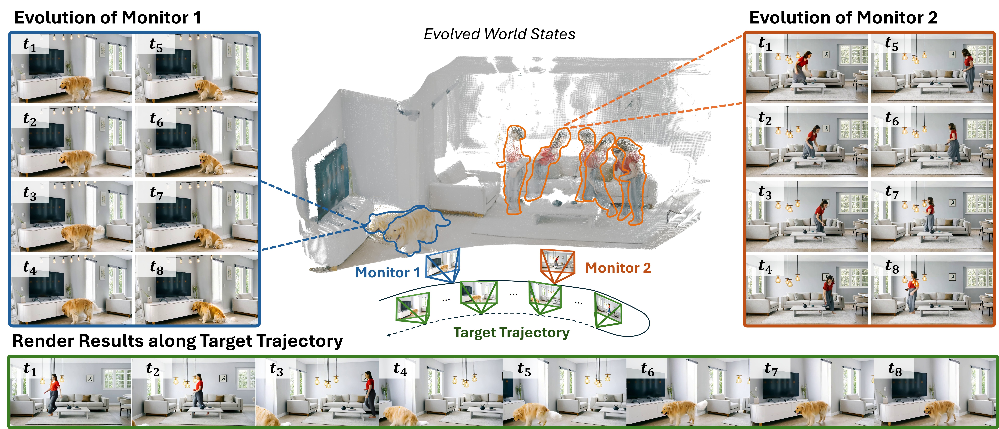
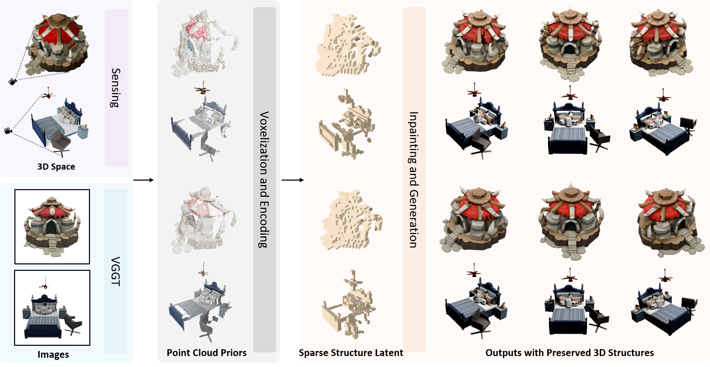
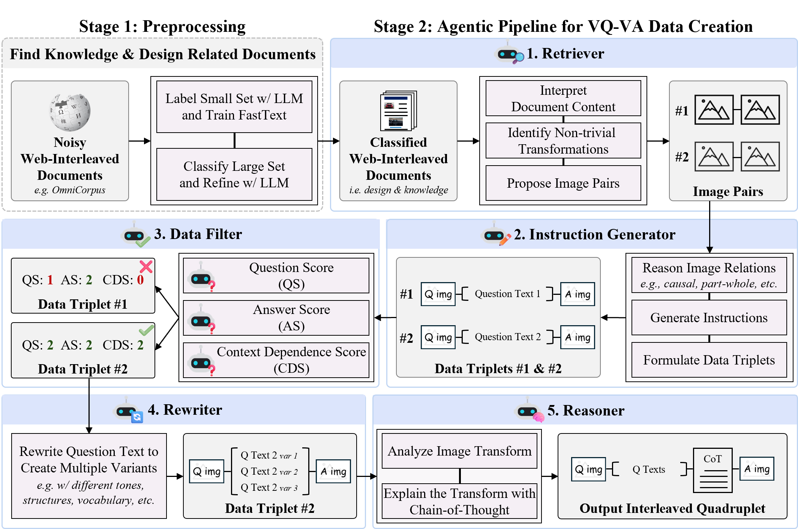
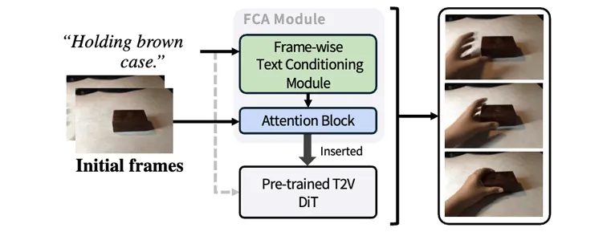
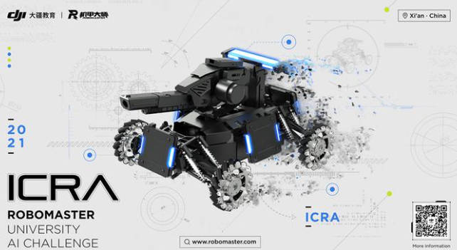

About Me
I am a second-year Ph.D. student in Computer Science at the Australian Institute for Machine Learning (AIML), University of Adelaide, fortunate to be supervised by Prof. Lingqiao Liu and Dr. Xinyu Zhang. Before that, I completed my Master's degree in Machine Learning and Computer Vision at the Australian National University where I worked on multi-camera detection problems advised by Prof. Liang Zheng.
I am currently working on Generative World Modeling, 3D Generation, and example-based video/image generation and MLLMs. Previously, I also explored areas such as multiview detection and robotic vision.
I'm looking for industrial internship, feel free to reach out!
News
- Mar 2026New preprint: LiveWorld - Simulating Out-of-Sight Dynamics in Generative Video World Models.
- Mar 2026One paper accepted to CVPR 2026 (Points-to-3D)!
- Mar 2026One paper accepted to CVPR 2026 (VQ-VA World)!
- 2025One paper accepted to TMLR.
- 2025Two papers accepted to BMVC 2025.
- 2025One paper accepted to ACM MM 2025.
- 2025Invited talk at DICTA 2025 workshop on Visual Generative Models.
Research Outputs

LiveWorld: Simulating Out-of-Sight Dynamics in Generative Video World Models
arXiv preprint (2026)





Frame-wise Conditioning Adaptation for Fine-Tuning Diffusion Models in Text-to-Video Prediction
TMLR (2025)

Projects
Invited Talks
Controllability Matters: Interpreting World Models from a Controllability Perspective
Invited talk at DICTA2025 workshop: Visual Generative Models: Past, Present, and Future
Competitions

ICRA 2021 Workshop RoboMaster Competition
Team Neurons, ranks 6/26
Academic Services
Reviewer: AAAI'25, DICTA'25, NeurIPS'24, ICASSP'24